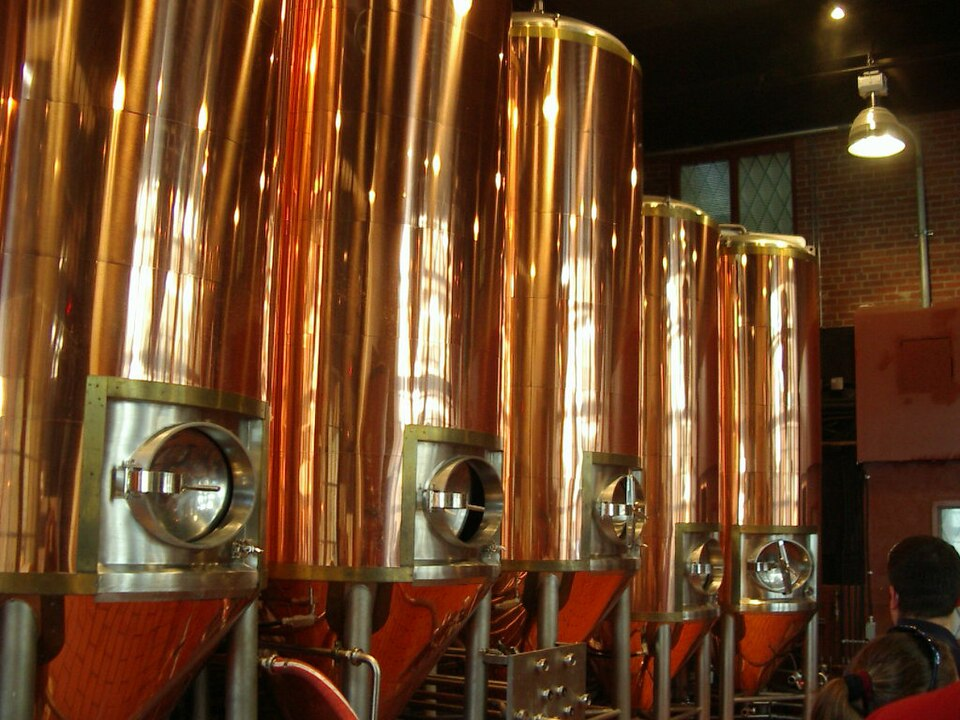

Never Compromise Purity
While mass-market breweries add cheap corn sugars to cut production costs, we have adhered strictly to the 1516 Reinheitsgebot every single day since 2009.
When founder John Marrino returned to North Carolina after living and working in Germany, he longed for the fresh, unpasteurized, cold-conditioned lagers of Bavaria. Finding none in Charlotte, he founded The Olde Mecklenburg Brewery in 2009—introducing the Queen City to genuine craft beer and pioneering the revitalized Lower South End brewery corridor.

Uncompromising adherence to quality, community fellowship, and North Carolina pride.
While mass-market breweries add cheap corn sugars to cut production costs, we have adhered strictly to the 1516 Reinheitsgebot every single day since 2009.
As the first packaging craft brewery in Charlotte, OMB paved the regulatory and cultural path for North Carolina’s now-booming craft brewing industry.
From seasonal festivals like Mecktoberfest and the Christmas Market to charitable fundraisers, our campuses serve as welcoming public gathering places.